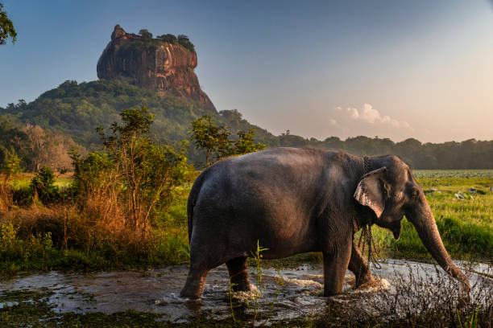
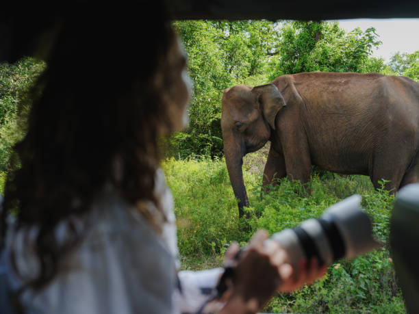

Massive Elephant Herds

Udawalawe, Minneriya and Kaudulla host spectacular gatherings of Asian elephants, especially during the dry season. Observing these herds offers a rare insight into elephant social behaviour and migration patterns.
Where & When
Best visited from July to October when water sources shrink and elephants congregate.

